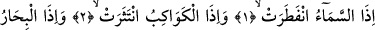
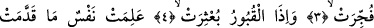
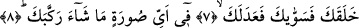
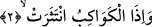

GÖKYÜZÜ YARILDIĞI ZAMAN
Bismillâhirrahmânirrahîm
1. Gökyüzü yarıldığı,
2. Yıldızlar döküldüğü,
3. Denizler birbirine katıldığı,
4. Kabirlerin içindekiler dışarı çıkarıldığı zaman,
5. İnsanoğlu (yapıp) gönderdiklerini ve (yapamayıp) geride bıraktıklarını bir bir
anlar.
6. Ey insan! İhsanı bol rabbine karşı seni aldatan nedir?
7. Seni yaratıp, seni düzgün ve uyumlu kılan,
8. İstediği bir şekilde birleştiren,
“Gök yarıldığı zaman.” Yani; gök, meleklerin inmesi için veya Rabbin heybetinden
yarıldığı zaman. Gökyüzünün meleklerin inmesi için yarılacağını bir başka âyetten
anlıyoruz. Allah şöyle buyuruyor: “O gün gökyüzü beyaz bulutlar ile yarılacak”
(Furkan 25/25)
Fethu’r-Rahman’da ifâde edildiğine göre; gökyüzünün düzensiz bir biçimde
yarılmasından maksad, onun bünyesinin ve ana yapısının ortadan kalkması için yarılıp
çatlamasıdır.
et-Te’vilatu’n-Necmiyye’de bu âyet şöyle anlaşılıyor: Ruhlar seması, kalplerin ve
esrarın göğü taayyunâtından kurtulduğunda benliği ortadan kalktığında...
Kâşânî ise bu âyete şöyle mânâ veriyor: Rûh-ı hayvâni semâsı rûh-i insânîden
ayrılmak ve ölüm ile zâil olmak sûretiyle yarıldığında...